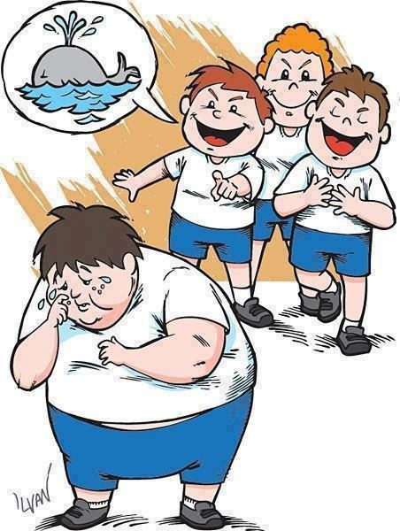
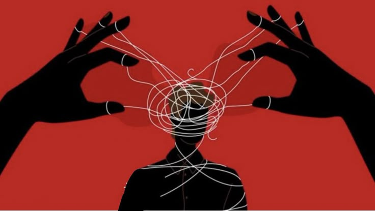
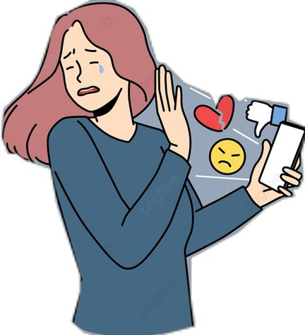
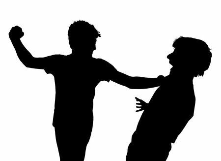

Violencia Verbal: La violencia verbal se manifiesta a través de palabras que buscan humillar, desvalorizar o intimidar a otra persona. No se trata solo de gritos; incluye insultos, burlas constantes, sarcasmo hiriente y el uso de apodos que dañan la dignidad. Aunque no deja marcas visibles en la piel, sus consecuencias pueden ser devastadoras, afectando profundamente la autoestima, la salud mental y la seguridad de quien la recibe.

Violencia psicológica:Es una forma de agresión que no utiliza la fuerza física, sino el control y la manipulación emocional para dañar la estabilidad mental de una persona. Se manifiesta a través de humillaciones, amenazas, celos excesivos, insultos y la 'ley del hielo' (ignorar a alguien para castigarlo). Su objetivo es destruir la autoestima de la víctima y generar una dependencia emocional, dejando cicatrices invisibles que pueden tardar mucho tiempo en sanar

Violencia digital:Es aquella que se ejerce a través de medios tecnológicos, como redes sociales, mensajes de texto o correos electrónicos. Incluye actos como el acoso (cyberbullying), la difusión de información o imágenes privadas sin consentimiento, la suplantación de identidad y el envío de mensajes de odio. Este tipo de agresión es particularmente dañina porque puede ocurrir las 24 horas del día y difundirse de forma masiva en cuestión de segundos, exponiendo a la persona ante miles de usuarios.

Violencia fisica: Es cualquier acto intencional que utiliza la fuerza corporal o algún objeto para causar daño, dolor o lesiones a otra persona. Se manifiesta a través de golpes, empujones, tirones de cabello, bofetadas o cualquier contacto físico no deseado que vulnere la integridad del cuerpo. A diferencia de otros tipos de agresión, esta deja huellas visibles; sin embargo, el daño más profundo suele ser el miedo y la inseguridad que genera en quien la padece
EN RESUMEN: Es fundamental entender que la violencia no siempre se presenta de una sola forma. A menudo, una agresión física viene precedida por violencia verbal o psicológica. Reconocer estos diferentes tipos de violencia es el primer paso para romper el ciclo y construir relaciones basadas en el respeto mutuo. Ninguna forma de maltrato debe ser normalizada; aprender a identificar estas señales nos permite protegernos a nosotros mismos y apoyar a quienes nos rodean.